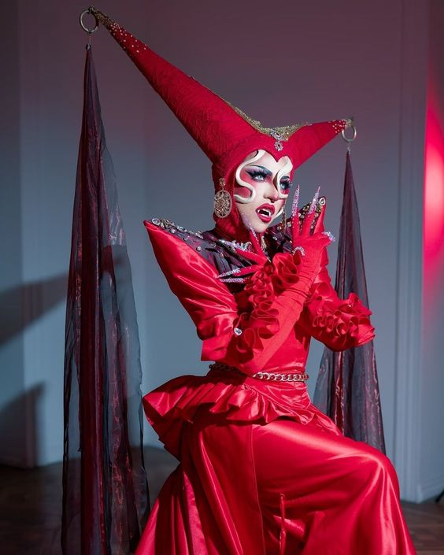
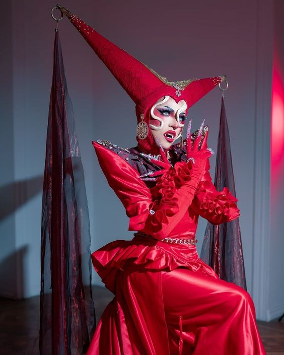
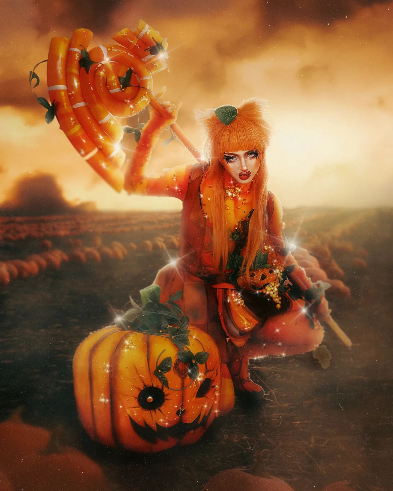
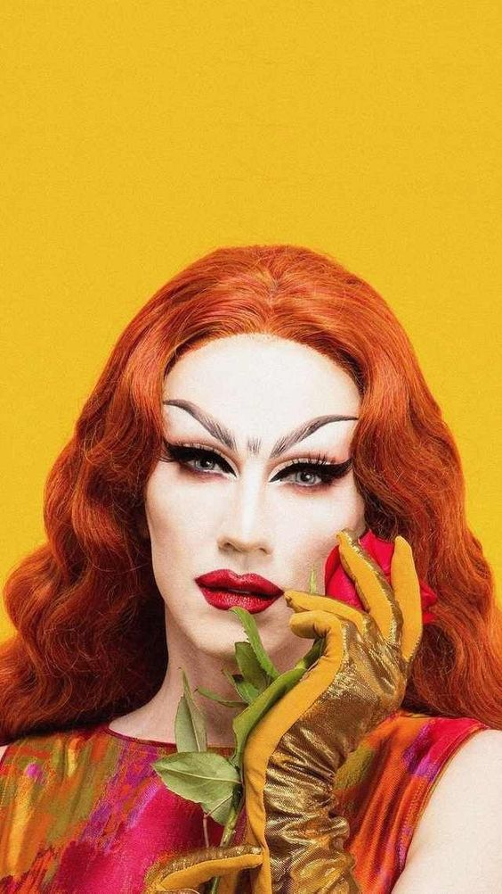
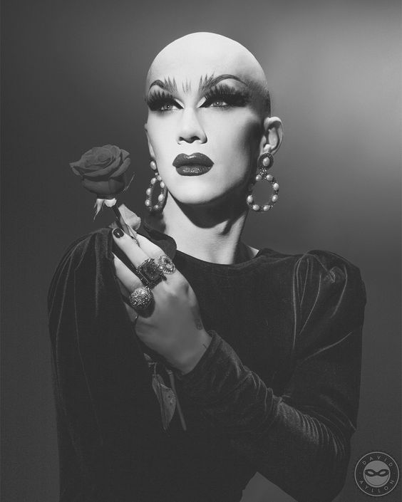
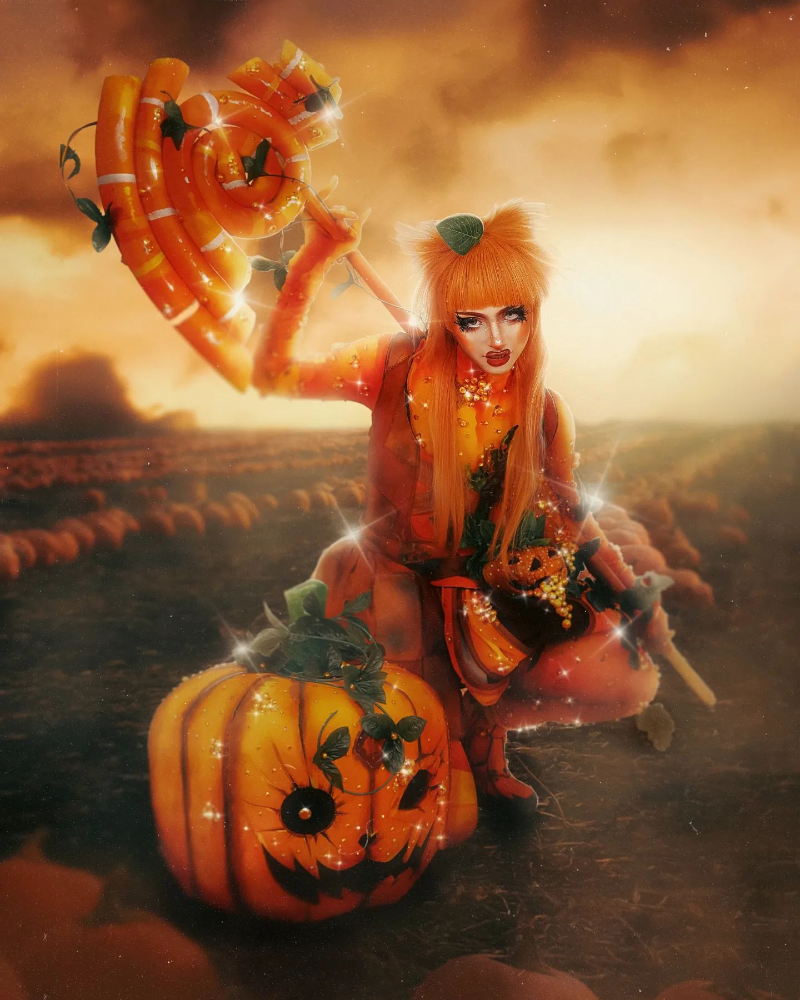
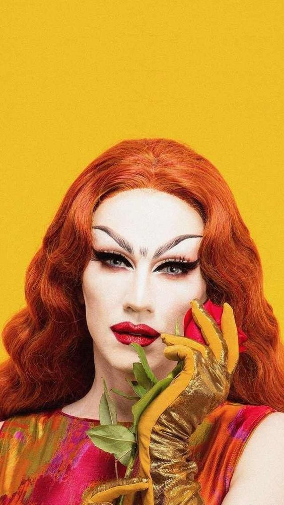
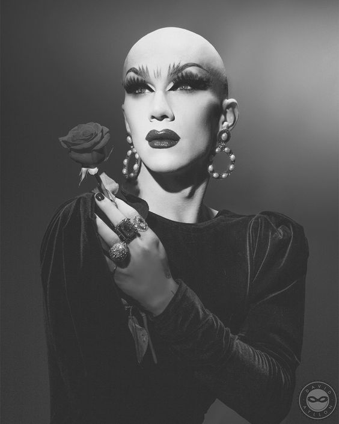

Las Reinas
1C-Pher
DragQueen, Cosplayer e Inteprete. Madre y fundadora de "House of C-Pher". Chilena pero Méxicana de corazón. Participo en la Temporada 4 de La Mas Draga. Amante del Cosplay, de la moda y maquillaje. Una verdadera reina de reinas, con un excelente talento.
2Hidden Mistake
Hija de C-Pher e integrante de "House of C-Pher". Participante de la Quinta temporada de La Mas Draga. La cerezita del pastel, coqueta y hermosa. Una cosplayer tierna pero con grandes dotes de maquillaje y grandes vestuarios.
3Sasha Velour
Drag queen, diseñadora e ilustradora estadounidense. Ganadora de la novena temporada de "RuPaul: Drag Race" Su diseño inspirada de los comics. Un drag Unico. Une al arte con el drag, en muchos de su vestuario y maquillaje se nota. Unica en su especie, la maravillosa Sasha Velour.
Galeria
 

 




